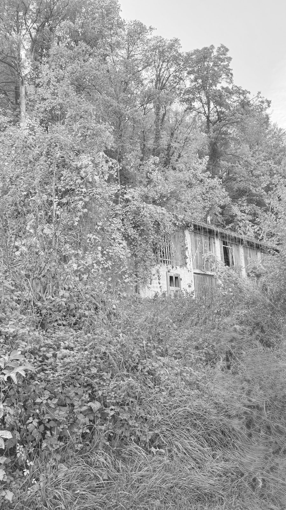
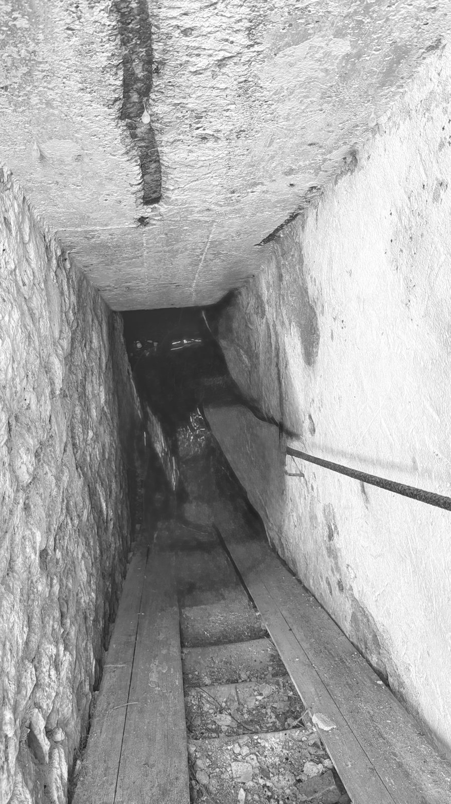
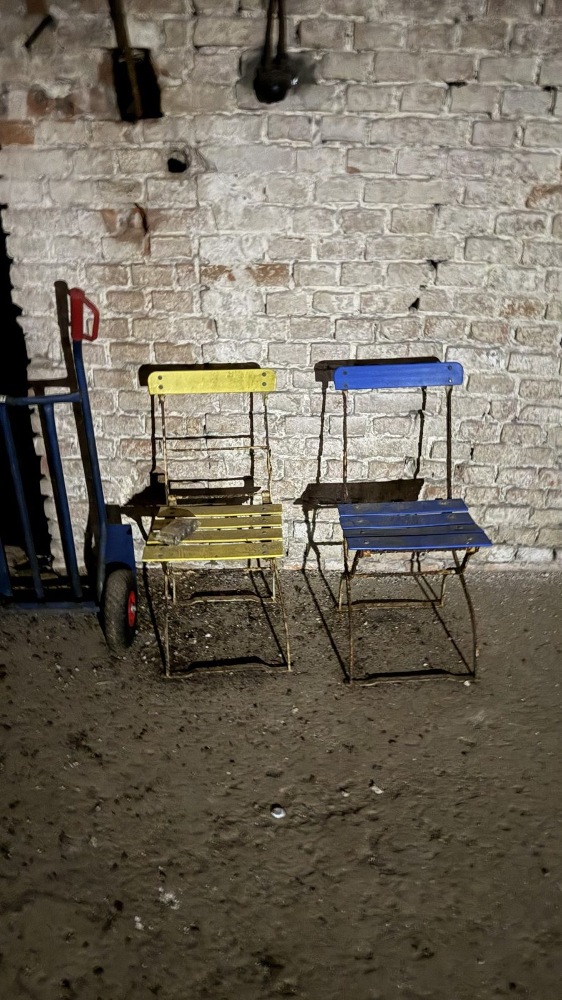
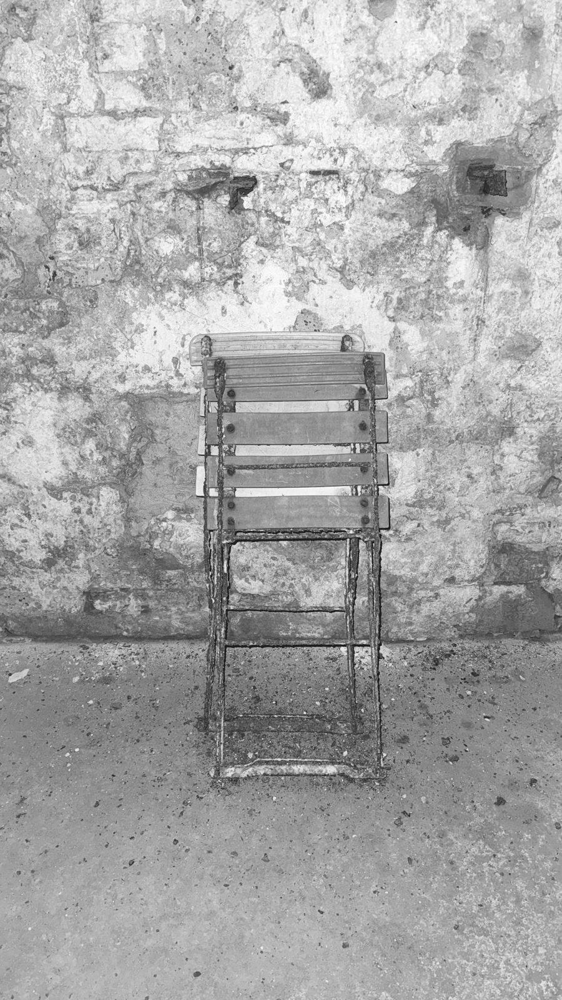
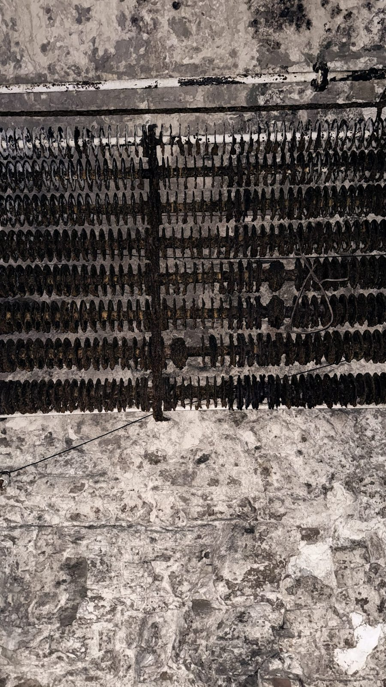
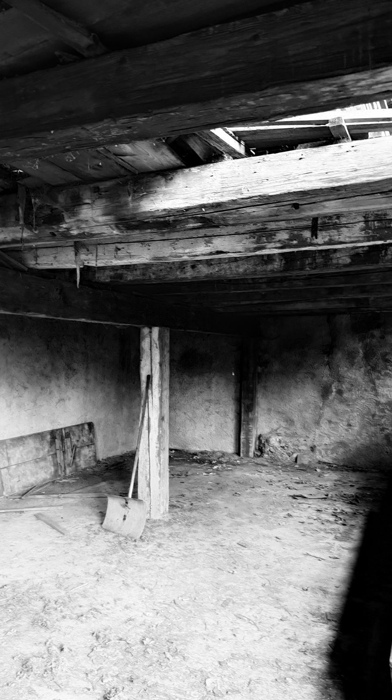
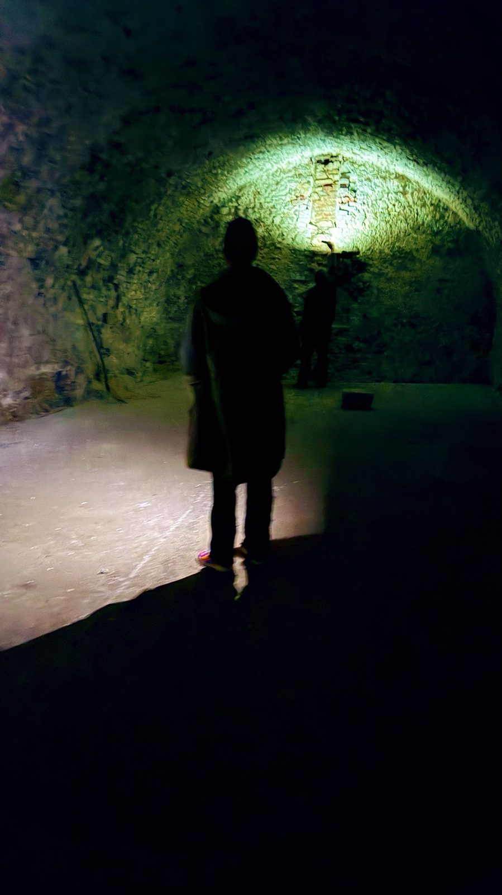
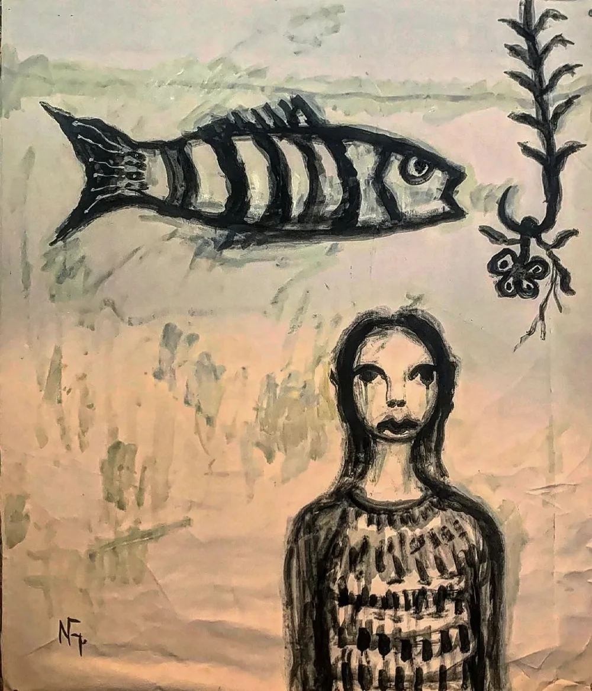
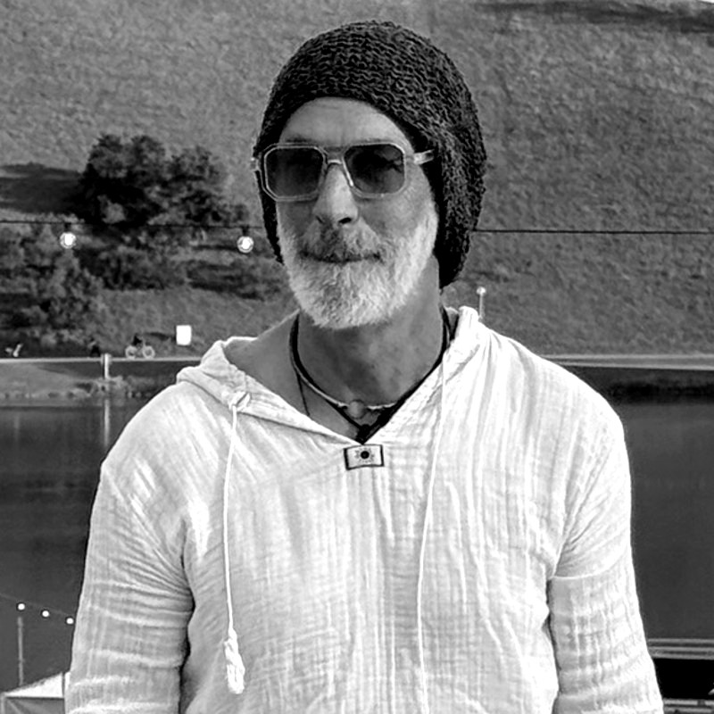

— Schaffensmenschen
— Schaffensmenschen
Wir sprengen Grenzen.Wir schaffen Raum. We break boundaries.We create space.Rompemos límites.Creamos espacio.Nous brisons les limites.Nous créons de l'espace.
zeigen. sehen. weiterschaffen.
offfen ist der ort dafür: ein raum für künstler, digital und international. grenzen auf, kontakte statt gewinn.
zeig, was gerade entsteht — ein foto, eine skizze, eine frage. worauf wartest du?
show. see. keep creating.
offfen is the place for it: an open space for artists, digital and international. open boundaries, contacts instead of profit.
show what's taking shape — a photo, a sketch, a question. what are you waiting for?mostrar. ver. seguir creando.
offfen es el lugar para ello: un espacio abierto para artistas, digital e internacional. fronteras abiertas, contactos en lugar de beneficio.
muestra lo que está surgiendo: una foto, un boceto, una pregunta. ¿qué esperas?montrer. voir. continuer à créer.
offfen est le lieu pour cela : un espace ouvert aux artistes, numérique et international. des frontières ouvertes, des contacts plutôt que du profit.
montre ce qui est en train de naître : une photo, une esquisse, une question. qu'attends-tu ?
unser raumour spacenuestro espacionotre espace







Hier wird OFFFEN ganz real: ein Raum für Atelier-Events und Begegnung. Here OFFFEN becomes real: a space for studio events and encounters. Aquí OFFFEN se hace real: un espacio para eventos de taller y encuentros.Ici, OFFFEN devient réel : un espace pour des événements d'atelier et des rencontres.

Aus Illusionen werden Visionen. Aus Visionen werden Räume. From illusions come visions. From visions come spaces.De ilusiones nacen visiones. De visiones nacen espacios.Des illusions naissent des visions. Des visions naissent des espaces.
Warum  .
Why
.
Why  .Por qué
.Por qué  .Pourquoi
.Pourquoi  .
.
Ein Werk ist mehr als sein Ergebnis. Dahinter stehen Fragen: Was bewegt dich? Was inspiriert dich? Wo hat es angefangen?
Zwischenstände, Umwege und Versuche ohne Namen hatten bisher keinen Ort.
 ist dieser Ort: Hier ist der Prozess genauso interessant wie das Ergebnis selbst.
A work is more than its result. Behind it are questions: What moves you? What inspires you? Where did it begin?
Stages, detours and attempts without a name had no place to go.
ist dieser Ort: Hier ist der Prozess genauso interessant wie das Ergebnis selbst.
A work is more than its result. Behind it are questions: What moves you? What inspires you? Where did it begin?
Stages, detours and attempts without a name had no place to go.
 is that place: here the process is as interesting as the result itself.Una obra es más que su resultado. Detrás hay preguntas: ¿Qué te mueve? ¿Qué te inspira? ¿Dónde empezó?
Las etapas intermedias, los desvíos y los intentos sin nombre no tenían dónde ir.
is that place: here the process is as interesting as the result itself.Una obra es más que su resultado. Detrás hay preguntas: ¿Qué te mueve? ¿Qué te inspira? ¿Dónde empezó?
Las etapas intermedias, los desvíos y los intentos sin nombre no tenían dónde ir.
 es ese lugar: aquí el proceso es tan interesante como el resultado mismo.Une œuvre est plus que son résultat. Derrière elle, il y a des questions : qu'est-ce qui te touche ? qu'est-ce qui t'inspire ? où tout a-t-il commencé ?
Les étapes intermédiaires, les détours et les essais sans nom n'avaient nulle part où aller.
es ese lugar: aquí el proceso es tan interesante como el resultado mismo.Une œuvre est plus que son résultat. Derrière elle, il y a des questions : qu'est-ce qui te touche ? qu'est-ce qui t'inspire ? où tout a-t-il commencé ?
Les étapes intermédiaires, les détours et les essais sans nom n'avaient nulle part où aller.
 est ce lieu : ici, le processus est aussi intéressant que le résultat lui-même.
est ce lieu : ici, le processus est aussi intéressant que le résultat lui-même.
Anders heißt: ohne Erlaubnis. Different means: without permission.Diferente significa: sin pedir permiso.Différent, ça veut dire : sans demander la permission.
WasWhatQuéQuoi
Hier zeigst du, was dich bewegt und inspiriert und wie daraus etwas wird. Skizzen, Versuche, Fragen — und ab und zu das fertige Werk. Here you show what moves and inspires you, and how something grows from it. Sketches, attempts, questions — and sometimes the finished work.Aquí muestras lo que te mueve y te inspira, y cómo de eso nace algo. Bocetos, intentos, preguntas, y de vez en cuando la obra terminada.Ici, tu montres ce qui te touche et t'inspire, et comment quelque chose en naît. Esquisses, essais, questions, et de temps en temps l'œuvre achevée.
Für wenFor whomPara quiénPour qui
Für alle, die etwas schaffen — ganz gleich in welcher Form, welchem Stadium oder welcher Sprache. Mit oder ohne fertiges Portfolio. For anyone who creates — in whatever form, stage or language. With or without a finished portfolio.Para todas las personas que crean, sea cual sea la forma, la etapa o el idioma. Con o sin portafolio terminado.Pour toutes les personnes qui créent, quelle que soit la forme, l'étape ou la langue. Avec ou sans portfolio achevé.
Was kann ich tunWhat can I doQué puedo hacerQue puis-je faire
Zeig, was gerade entsteht, ein Foto reicht. Sieh, woran andere arbeiten. Gib Rückmeldung und hol dir welche. Show what's taking shape, a photo is enough. See what others are working on. Give feedback and get some.Muestra lo que está surgiendo, una foto basta. Mira en qué trabajan otras personas. Da tu opinión y recibe la de ellas.Montre ce qui est en train de naître, une photo suffit. Regarde sur quoi travaillent les autres. Donne ton avis et reçois celui des autres.

Die IdeeThe ideaLa ideaL'idée
Bernd Neichsner
Visionär hinter OFFFENVisionary behind OFFFENVisionario detrás de OFFFENVisionnaire derrière OFFFEN
Von ihm stammt die Idee: ein Raum, in dem Schaffende zeigen, was sie bewegt und wie ihr Werk entsteht — der Prozess ist so interessant wie das Ergebnis. The idea is his: a space where creators show what moves them and how their work comes to be — the process is as interesting as the result.Suya es la idea: un espacio donde quienes crean muestran lo que los mueve y cómo nace su obra: el proceso es tan interesante como el resultado.L'idée est de lui : un espace où celles et ceux qui créent montrent ce qui les touche et comment naît leur œuvre. Le processus est aussi intéressant que le résultat.
Zum ProfilTo the profileIr al perfilVoir le profilIdeen im Werden.Ideas in the making.Ideas en proceso.Des idées en chemin.
Deine Idee muss noch nicht fertig sein.Your idea doesn't need to be finished yet.Tu idea todavía no tiene que estar terminada.Ton idée n'a pas encore besoin d'être achevée.
Schick ein DetailSend a detailEnvía un detalleEnvoie un détailFolg dem ProzessFollow the processSigue el procesoSuis le processus
@offfen.schaffensmenschen